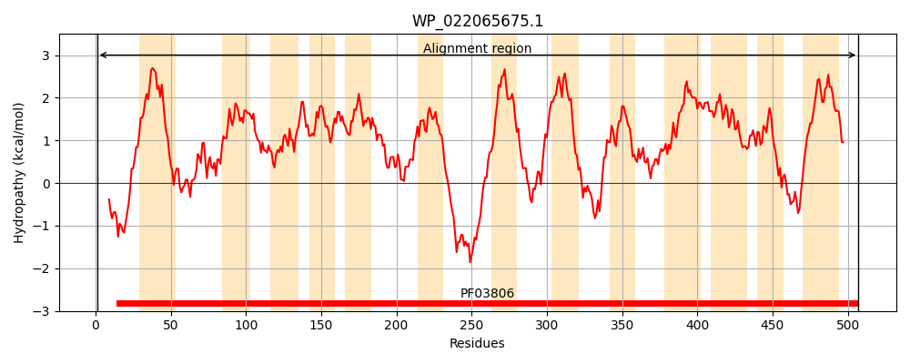
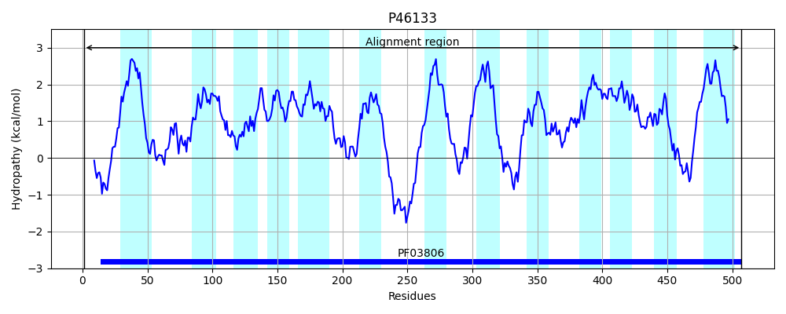
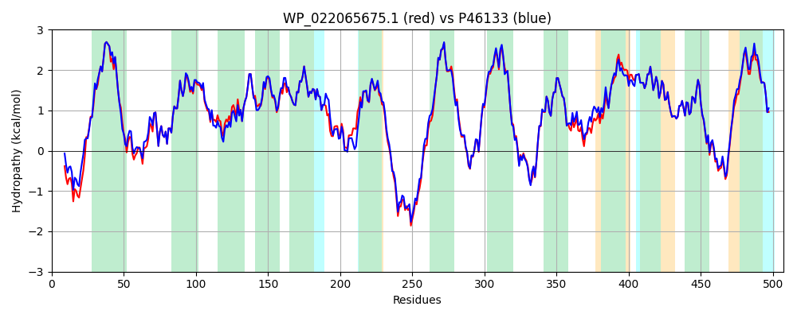

Hit Accession: P46133
Hit TCID: 2.A.68.1.1
Hit Description: gnl|BL_ORD_ID|10613 gnl|TC-DB|P46133|2.A.68.1.1 Aminobenzoyl-glutamate transport protein - Escherichia coli.
Mach Len: 507
e:0.000000
Query TMS Count : 13
Hit TMS Count: 13
TMS-Overlap Score: 12.050000
Predicted Substrates:CHEBI:60903;N-(4-aminobenzoyl)-L-glutamate
BLAST Alignment:
Score: 2321 , Bit scores: 898 bits, E-value: 0.0e+00, Alignment length: 507, Percentage identity: 88
Query: 1 MSMSSIPSSSPGGKRYGWVEKIGNKVPHPFLLFIYLIVALIAATAILSAFNVGVQNPTDGSRVVVKNLLSVEGLHWFLPNVIKNFSGFAPLGAILALVLGAGFAERVGLLPALMVKMASHVSARYASYMVLFIAFFSHISSDAALVIMPPLGALMFLAVGRHPVAGLLAAIAGVGCGFTANLLIVTTDVLLSGISTEAAKSIDASLHVSVIDNWYFMATSVIVLTLVGGLITDKLVEPRLGQWQGSRDEKLQTLTPEERFGLRIAGVATLVFVAVVALMVVPENGILRDPVQHTVMPSPFIKGIVPLIIFFFFVVSLAYGIATGKIRRQADLPQLMIEPMKEMAGFIVMVFPLAQFVAMFNWSNMGKFMAVGLTDLLESAGMNGVPAFVGLALLSAFLCMFIASGSAIWSILAPIFVPMFMLLGFHPAFAQILFRIADSSVLPLAPVSPFVPLFLGFLQRYRPDARLGTYYSLVLPYPLIFLAVWLLLLVGWYLVGLPIGPGIYPRL 507
MSMSSIPSSS GK YGWVE+IGNKVPHPFLLFIYLI+ L+ TAILSAF V +NPTDG+ VVVKNLLSVEGLHWFLPNVIKNFSGFAPLGAILALVLGAG AERVGLLPALMVKMASHV+ARYASYMVLFIAFFSHISSDAALVIMPP+GAL+FLAVGRHPVAGLLAAIAGVGCGFTANLLIVTTDVLLSGISTEAA + + +HVSVIDNWYFMA+SV+VLT+VGGLITDK++EPRLGQWQG+ DEKLQTLT +RFGLRIAGV +L+F+A +ALMV+P+NGILRDP+ HTVMPSPFIKGIVPLII FFFVVSLAYGIAT IRRQADLP LMIEPMKEMAGFIVMVFPLAQFVAMFNWSNMGKF+AVGLTD+LES+G++G+PAFVGLALLS+FLCMFIASGSAIWSILAPIFVPMFMLLGFHPAFAQILFRIADSSVLPLAPVSPFVPLFLGFLQRY+PDA+LGTYYSLVLPYPLIFL VWLL+L+ WYLVGLPIGPGIYPRL
Sbjct: 1 MSMSSIPSSSQSGKLYGWVERIGNKVPHPFLLFIYLIIVLMVTTAILSAFGVSAKNPTDGTPVVVKNLLSVEGLHWFLPNVIKNFSGFAPLGAILALVLGAGLAERVGLLPALMVKMASHVNARYASYMVLFIAFFSHISSDAALVIMPPMGALIFLAVGRHPVAGLLAAIAGVGCGFTANLLIVTTDVLLSGISTEAAAAFNPQMHVSVIDNWYFMASSVVVLTIVGGLITDKIIEPRLGQWQGNSDEKLQTLTESQRFGLRIAGVVSLLFIAAIALMVIPQNGILRDPINHTVMPSPFIKGIVPLIILFFFVVSLAYGIATRTIRRQADLPHLMIEPMKEMAGFIVMVFPLAQFVAMFNWSNMGKFIAVGLTDILESSGLSGIPAFVGLALLSSFLCMFIASGSAIWSILAPIFVPMFMLLGFHPAFAQILFRIADSSVLPLAPVSPFVPLFLGFLQRYKPDAKLGTYYSLVLPYPLIFLVVWLLMLLAWYLVGLPIGPGIYPRL 507 | Protein Hydropathy Plots: |
|---|
|  |  |
Pairwise Alignment-Hydropathy Plot:
|
|---|
|  |